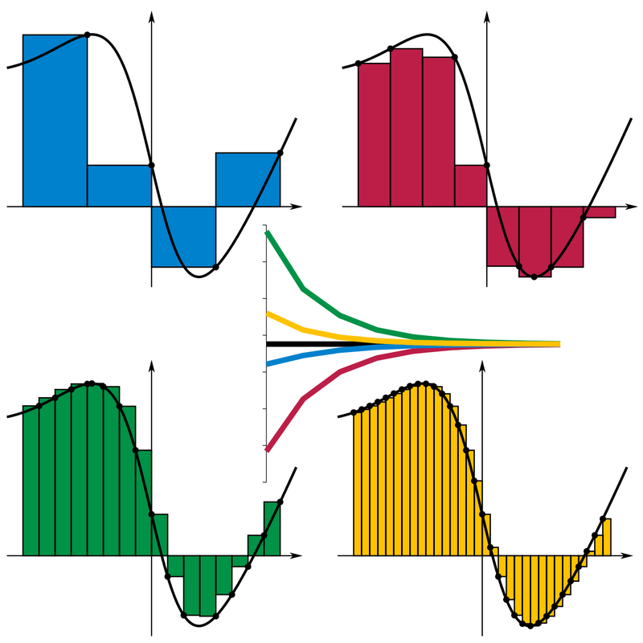

Introduction to Parallel Programming in C++ with OpenMP
Introduction to OpenMP in C++
In this tutorial, I aim to introduce you to OpenMP, a library facilitating multiprocessing in C++. I assume little-to-no background in computer science or low-level programming, and only a basic understanding of C++. I will steer clear of technical jargon wherever possible. Many online resources presume you are a seasoned programmer or computer scientist. Instead, I assume that you utilize programming as a tool and prioritize the "how" over the "why". However, for those interested in the rationale behind concepts, I will include some links at the bottom for further reading.
If you are an experienced programmer, you might notice some terminology that may seem imprecise. For instance, when using shared and private, I refer to "copy" instead of delving into references and mutability intricacies. As mentioned, this tutorial caters to learners seeking to grasp concepts and initiate coding rather than the theoretical computer science underpinning these concepts.
Worried about setting up your environment correctly? Want to just run the examples here? These examples can be run from a docker image, see here for the latest image.
docker run -it --rm --gpus all obriens/parallel:latest
How to Calculate \(\pi\)
Calculating π using a Riemann Sum Approximation
To determine the value of π, we can solve the following integral:
An approximation of this integral can be made using a Riemann Sum, also known as the "rectangle rule," defined as:
where:
- \(n\) represents the number of "rectangles."
- \(f(x^*_i)\) denotes a point within the range \((x_{i-1}, x_{i})\).
- \(\Delta x = x_{i} - x_{i-1}\) represents the width of each rectangle.
- \(f(x^*_i)\) is the function to approximate at \(x^*_i\).
Within this summation, the calculation involves finding the area of a rectangle with width \(\Delta x\) and height \(f(x^*_i)\). Determining the value of \(n\) allows full coverage of the entire integral domain by summing rectangles of width \(\Delta x\).
For instance, in the case of approximating π using 100 steps ($ n = 100 $), the width is calculated as \(\Delta x = \frac{(b - a)}{n} = \frac{(1 - 0)}{100} = 0.01\).

Estimating π using Riemann Sum
To estimate the value of π, we can use the following formula:
Here, we define \(x^*_i\) as the midpoint between \(x_{i-1}\) and \(x_{i}\). As \(n \rightarrow \infty\), the estimation becomes independent of how we define \(x^*_i\).
In C++, the approximation formula would look something like this:
| calc_pi_serial | |
|---|---|
1 2 3 4 5 6 7 8 9 10 11 | |
On line 4, we utilize the requested number of steps (num_steps) to define step, which represents \(\Delta x\). Note that we "cast" the int num_steps to a double type in the division.
Moving to line 6, we determine \(x^*_i\) as the midpoint between \(x_{i-1}\) and \(x_{i}\) before adding the current iteration to the total.
Finally, on line 9, we multiply the sum by step, thereby calculating the area of the rectangle. As \(\Delta x\) remains constant, we can optimize the code by taking this operation out of the loop.
Before evaluating the code's performance, let's include some useful libraries.
Example:
#include <iostream>
#include <chrono>
In this implementation, we'll utilize iostream along with cout for printing the results. Additionally, we will employ chrono to measure the time taken for the code execution.
Combining these libraries together, we get the following:
| calculate_pi.cpp | |
|---|---|
1 2 3 4 5 6 7 8 9 10 11 12 13 14 15 16 17 18 19 20 21 22 23 24 25 26 27 28 29 30 31 32 33 34 35 36 37 38 | |
Lines 21 and 22 involve defining num_steps as 1 million and n_repeat as 50. This setup allows us to repeat the calculation of \(\pi\) 50 times, considering the mean run time as our performance metric.
Moving to lines 28-30, we initiate a timer, execute the function 50 times, and subsequently stop the timer, calculating the duration on line 32. Finally, we present the mean results.
Upon compiling this example and running it, the observed output is:
Serial Calculation of Pi: 3.14159
Duration: 0.00263172 seconds
An execution time of 0.003 seconds doesn't sound too bad, providing us with an accurate estimation of \(\pi\). However, it would be beneficial to explore how we can further enhance the speed of this code.
To leverage parallel execution, we must reconsider our algorithm. This involves identifying which sections can be executed in parallel and which sections must remain in serial execution. Let's establish this as our baseline. The speedup factor is defined as:
Poorly Parallelized Code
Examining the calc_pi_serial function, we observe a substantial loop that appears to be a promising candidate for parallelization. Our initial step will involve optimizing this for loop to execute across multiple threads.
Defining a parallel scope
- To define a parallel scope or a block of code to run in parallel, we are going to use openMP. First we will include the openMP library:
#include<opm.h> - Once we identify the area of the code to run in parallel, we define a new ``scope'' for that section
// Define a parallel block of code #pragma omp parallel { // Code we want to run in parallel ... } - In this example we will be using a fixed number of threads that we know at compile time. On Linux we can identify how many CPU cores we have access to using
lscpu:Here I have access to 16 cores. I will therefore define a constant in my code equal to the number of cores:lscpu ... CPU(s): 16 On-line CPU(s) list: 0-15 ...#define NUM_THREADS 16
Here is my initial (incorrect) attempt at a parallel version for calculating \(\pi\):
| calculate_pi_wrong | |
|---|---|
1 2 3 4 5 6 7 8 9 10 11 12 13 14 15 16 17 18 19 | |
At line 4, we define chunks, representing the number of iterations that will occur on each thread. Subsequently, on line 6, omp_set_num_threads(NUM_THREADS) is utilized to specify the number of threads to be invoked.
Moving to line 7, we establish a parallel block spanning from line 8 to line 15. Within this block, on line 10, omp_get_thread_num() retrieves the thread ID for the currently executing thread. Following that, line 11 introduces a loop specifically iterating over the steps assigned to each thread.
To compile, it's necessary to use the -fopenmp flag. For instance:
g++ mycode.cpp -o mycode -fopenmp
Parallel (Wrong) Calculation of Pi: 0.297578
Duration: 0.00838327 seconds (0.313425 speed up)
Parallel (Wrong) Calculation of Pi: 0.283952
Duration: 0.00774014 seconds (0.338872 speed up)
Our parallel implementation takes longer to execute than the serial example, and it also computes an incorrect value for \(\pi\). Additionally, the calculated value of \(\pi\) is not reproducable. Let's delve deeper into understanding the code's behavior...
What went wrong
In the initial setup, we define several variables within the "parent scope" to be utilized within the parallel section of the code. However, these variables are accessed and modified in parallel, leading to read and write operations occurring simultaneously at lines 12-13.
| calculate_pi_wrong | |
|---|---|
1 2 3 4 5 6 7 8 9 10 11 12 13 14 15 16 17 18 19 | |
sum variable without control or predictability regarding which thread modifies the sum value. Threads accessing and modifying sum concurrently can lead to unexpected behavior. For instance, consider that on iteration 1, thread 1 takes sum as 0 and modifies it. Concurrently, thread 2 attempts the same, leading to different values being written to the same variable. Consequently, the calculation of sum becomes unreliable due to this simultaneous access.
This issue, known as a race condition, arises as the code outcome depends on the order in which threads access data.
Let's look at how we may solve this issue...
Solving the Race Condition using an array
To resolve the race condition, ensuring that only one thread accesses a variable at any given time is essential. For this purpose, we require a variable accessible to all threads yet controllable by a main thread for summation. An effective solution involves employing an array of size NUM_THREADS.
| calculate_pi_correct | |
|---|---|
1 2 3 4 5 6 7 8 9 10 11 12 13 14 15 16 17 18 19 20 21 22 23 24 25 26 27 28 | |
double array of size NUM_THREADS is initialized. On line 14, the variable x is localized for each thread. Moving to line 17, a loop iterates through each section for every thread, setting sum[id] to 0 for each thread. Then, at line 20, modification occurs solely within the thread's respective entry in the array. Finally, on line 25, the aggregated list is combined.
Upon compilation and execution, the observed outcome is:
Parallel (Correct) Calculation of Pi: 3.14159
Duration: 0.00562214 seconds (0.466534 speed up)
Although we accurately estimate \(\pi\) with reproducible results, there's no observed enhancement in runtime. To comprehend this, scrutiny of lines 4, 17, and 20 is necessary.
We've defined sum as a double array of size NUM_THREADS. In memory, sum refers to a contiguous block of memory. Loading sum into our cache requires the passing of sum between threads. Consider threads A and B: when sum enters the cache, it occupies a "cache line," awaiting CPU utilization. Both threads attempt to access sum. While thread A successfully accesses sum, thread B encounters a "cache miss," leading to a delay. This issue can be addressed by incorporating knowledge of CPU and cache behavior into our data type design.
Pading our Array
Understanding our cache design allows us to optimize how data is organized, resulting in improved performance. One method for this optimization is known as "padding". By employing padding, we introduce additional, redundant information to ensure that our data is stored within the same cache line.
In the context of the aforementioned example, we can implement padding for the sum array by transforming it into a 2D array with dimensions NUM_THREADS\(\times64\). But why 64? To understand this, let's examine our CPU:
> cat /proc/cpuinfo| grep cache
cache size : 512 KB
cache_alignment : 64
How does this analogy apply to us? When we read from the cache, our aim is to minimize how often we access an array. If we solely require one row of an array, one cache line suffices. To achieve this, we pad our row with 63 other non-essential pieces of information. Subsequently, the second read will access the second row, which is on the subsequent "row of traffic".
We design our array to leverage the cache's ability to read 64 elements of a row at once. The following example demonstrates the implementation of this strategy:
| calculate_pi_padded | |
|---|---|
1 2 3 4 5 6 7 8 9 10 11 12 13 14 15 16 17 18 19 20 21 22 23 24 25 26 27 28 | |
sum as a 2D double array. On lines 17, 20 and 25, we are only accessing the 0\(^{th}\) element of each row.
Parallel (Padded) Calculation of Pi: 3.14159
Duration: 0.00167924 seconds (1.56197 speed up)
Success! We observe a 1.56x improvement in performance. While this approach isn't memory-efficient, it demonstrates how organizing our data can significantly enhance performance.
Using a Locking Construct
So far, we have tried to solve the race condition issue by increasing the memory requirement. We can also use a construct to control the order in which threads can access a section of the code.
Using constructs
OpenMP has several constructs that we can use in our code to modify a thread's flow. See here for a useful cheat sheet.
-
Thus far, we've encountered the
parallelconstruct, defining a code section to run in parallel:#pragma omp parallel { // Code to be ran in parallel ... } -
The
masterconstruct designates a code section to execute on a single thread, identified as the "master" or main thread.#pragma omp parallel { // Code running on all threads a += 1; #pragma omp master { // Code only running on one thread b += 1; } } -
A
barrierconstruct synchronizes threads, ensuring that all threads reach the same point before proceeding.#pragma omp parallel { // Code running on all threads a += 1; // Waiting until all threads reach this point #pragma omp barrier b += 1; } -
The
sectionsconstruct specifies distinct code sections to execute in parallel across various threads.// Start of sections block omp_get_thread_num(2); #pragma omp sections { // Section 1 #pragma omp section { a+=1; } // Section 2 #pragma omp section { b+=1; } } - Furthermore, the behavior of a construct can be modified using "directives".
In the provided code, we modified the behavior of the
#pragma omp parallel private (a) shared (b) { a += b; }parallelconstruct. Each thread now carries a "private" copy ofaand shares a copy ofb. Changes toaare confined to the thread locally, while modifications tobaffect all threads uniformly.
Let us modify the calculate_pi_correct example to use constructs to improve the performance.
| calculate_pi_critical | |
|---|---|
1 2 3 4 5 6 7 8 9 10 11 12 13 14 15 16 17 18 19 20 21 22 23 24 25 26 27 28 29 30 | |
In the above code, variables pi, sum, and x are defined outside the loop, making them accessible to all sub-scopes. We use the private and shared directives. This gives each thread a private copy of sum and x, and a shared copy of pi. This is shown on line 10.
With this adjustment, concerns about moving around sum and x are eliminated since each thread possesses its own copy. However, caution is necessary regarding how threads modify pi. To address this, we employ a critical construct, designating a code region accessible to only one thread at a time.
The utilizating the critical construct on line 24 acts as a "lock", effectively halting other threads from progressing beyond this code section. Once a thread completes the addition operation and moves to line 27, the scope ends, releasing the "lock" and enabling the subsequent thread to enter this part of the code.
critical constructs serve a valuable purpose in managing thread access when modifying shared data accessible to all threads.
Parallel (Critical) Calculation of Pi: 3.14159
Duration: 0.00025696 seconds (10.2075 speed up)
We are now observing a tenfold (\(\times10\)) enhancement over the baseline test. Through refining the management of variable passing and controlling access using constructs, we've significantly enhanced our code.
Using an Atomic Construct
You might be familiar with atomic data types—these are data types that automatically trigger a lock whenever a read/write operation is executed on them. In OpenMP, we utilize an atomic construct to segment a section of the code where we perform such atomic operations.
| calculate_pi_atomic | |
|---|---|
1 2 3 4 5 6 7 8 9 10 11 12 13 14 15 16 17 18 19 20 21 22 23 24 25 26 27 28 29 30 | |
The main distinction between calculate_pi_critical and calculate_pi_atomic lies on line 24, where an atomic construct replaces the critical construct. When utilizing an atomic construct, the subsequent operation is treated as atomic, triggering a lock during read/write operations.
Parallel (Atomic) Calculation of Pi: 3.14159
Duration: 0.000249191 seconds (10.5257 speedup)
++, --, +, *, -, /, &, ^, <<, >>, |) are limited and can only be applied to primitive data types (e.g., int, float, double). While atomic constructs are useful, they are less versatile compared to critical constructs.
Using a Reduction
Operations such as summations and products are frequently encountered. In fact, many of these operations can be executed using constructs and directives available in OpenMP. The reduction directive serves the purpose of indicating to the code that a variable is the result of a well-known operation. The compiler will then handle the necessary tasks, including ensuring memory safety, optimization, and more.
| calculate_pi_reduction | |
|---|---|
1 2 3 4 5 6 7 8 9 10 11 12 13 14 15 16 17 18 19 20 21 22 | |
All the previous steps have been consolidated into one line, specifically line 11. Here, we instruct the compiler that within a for loop, we intend to execute a well-known reduction operation, specifically adding multiple values to the variable sum ((+:sum)). Additionally, we specify that each thread requires a private copy of x. This approach eliminates the necessity for critical or atomic constructs, as the compiler handles these complexities on our behalf.
Parallel (Reduction) Calculation of Pi: 3.14159
Duration: 0.000212785 seconds (12.3266 speed up)
We observe a \(\times 12\) enhancement in execution speed.
Summary
Serial Calculation of Pi: 3.14159
Duration: 0.00262292 seconds
Parallel (Wrong) Calculation of Pi: 0.283952
Duration: 0.00774014 seconds (0.338872 speed up)
Parallel (Correct) Calculation of Pi: 3.14159
Duration: 0.00562214 seconds (0.466534 speed up)
Parallel (Padded) Calculation of Pi: 3.14159
Duration: 0.00167924 seconds (1.56197 speed up)
Parallel (Critical) Calculation of Pi: 3.14159
Duration: 0.00025696 seconds (10.2075 speed up)
Parallel (Atomic) Calculation of Pi: 3.14159
Duration: 0.000249191 seconds (10.5257 speed up)
Parallel (Reduction) Calculation of Pi: 3.14159
Duration: 0.000212785 seconds (12.3266 speed up)
When comparing the baseline to optimal code, we only need an additional 4 lines of code:
#include<opm.h>
...
#define NUM_THREADS 16
...
omp_set_num_threads(NUM_THREADS);
#pragma omp parallel for reduction (+:sum) private (x)
...
OpenMP equips us with pre-existing "constructs" and "directives" that facilitate the development of high-performing code. This allows us to emphasize the code's functionality rather than dwelling extensively on optimization techniques.
Even for more generic code that cannot utilize atomic or reduction, significant performance enhancements can still be achieved by modestly rethinking how our algorithms operate.
In this example, our focus has been exclusively on CPUs. The code utilized in this demonstration is available on GitHub.